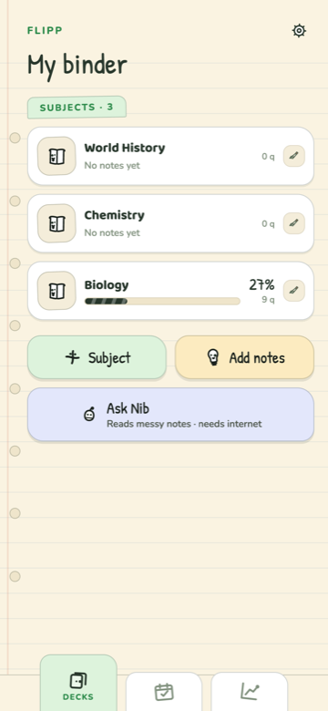

Multiple choice
Four options, wrong ones borrowed from your own notes — never filler.
Flip it till you know it
Paste the notes you already wrote. Flipp turns them into seven kinds of question, hands you a paper to sit, and marks it the moment you finish.
FLIPP
Biology
Chemistry
History
10 lines
10 we can use
5 definitions
That is the homework before the homework — and it is where almost everyone quits. Flipp reads the notes you already took and does that part for you.
TRY IT — nothing is sent anywhere
What Flipp makes of them
This is a cut-down copy of the rules that run on your device — enough to show the idea. The app knows more patterns, writes all seven formats, and borrows its wrong answers from across the whole subject.
HOW IT WORKS
Type or paste them in. Flipp reads the shape as you go and tells you what it can use — how many lines, how many are definitions, how many it will turn into questions. Nothing is a surprise.
Tick the question types you want and say exactly how many of each. Ten multiple choice and five matching, or forty identification — it is your paper, not a preset.
Pick a mode, sit the paper, and get it back marked — with a short note on what actually cost you marks and one thing to do next. Not a wall of statistics.
SEVEN QUESTION TYPES
Recognising an answer in a list is easier than producing it from nothing. Flipp can ask the same fact both ways, so you find out which one you can actually do.
Four options, wrong ones borrowed from your own notes — never filler.
A claim rebuilt from your line. Sometimes it is quietly wrong.
If it is false, say which word makes it false and fix it.
The meaning is given. You produce the term, spelled out.
Your own sentence with the load-bearing word taken out.
Two columns to pair up — only built when your notes can fill the grid.
List all three states of matter. No credit for two of them.
Type a question and its answer; Flipp borrows plausible wrong options from the subject.
THE REAL THING
Not renders. These are screenshots of the app running.

Your binder. Every subject with the share of it you can actually answer right now.
NEW — MEET NIB
Flipp reads patterns: Term: meaning, plain facts, short lists. Real notes are messier than that — paragraphs of prose, a lecture PDF, a photo of someone else’s handwriting. Nib is the one who reads those.
Every question Nib returns has to quote the line it came from, word for word, out of the notes you sent. Anything he cannot find in your own writing is thrown away before you ever see it — because a study app that invents a fact teaches it, then rewards you for repeating it back.
Hand him a PDF, a JPEG, a PNG or a page you have simply typed out, and he gives back questions in the same seven formats as everything else — they land in the review screen and you keep or drop them one by one.
Nothing is sent in the background. Nib reads one page, once, because you pressed the button — and he is the only part of Flipp that talks to the network at all.
The honest part: Nib runs on Google’s Gemini, reached through Flipp’s own reader so no API key ever ships inside the app. On the free tier Google may use what is sent to improve their models, so keep anything genuinely private out of a reading. Readings are counted in pages — 150 a week in the app, 20 in the browser.
FIVE WAYS TO SIT IT
Every mode sets three dials at once — the clock, when you see the answer, and whether a question can come back. They are deliberately not separate toggles: presets read like a game, toggles read like admin.
No clock. Answer, see how you did, move on.
Start ›
Miss one and it comes back. Get it right twice and it’s gone.
Build the pile ›
Seconds per question. Run out and it counts as missed.
Light the fuse ›
One timer for the whole paper. No answers until you submit.
Sit the paper ›
Questions keep coming. Three misses and it’s over.
Take the first hit ›
Exam simulation hides every verdict until you hand the paper in — including on the questions it would otherwise have marked instantly.
PROGRESS, HONESTLY
Mastery is not a high score. It is an average over every question in the subject — including the ones you have never been asked.
There is no XP, there are no ranks and there is no leaderboard. Those reward grinding the easy deck. Mastery is the honest version of the same feeling.
36 of 50 questions you can answer
Drag it. The percentage falls because the subject grew, not because you forgot anything.
A streak that changes shape
Ten tiers, from a cold coal to a fire with rays and embers. Each one is a different drawing, not the same flame in a new colour — so you can tell them apart at a glance.
THE REST OF IT
You set when you want to study and Flipp reminds you then. It does not decide on its own that today is a good day to nag you.
Notes, questions, exams, marking and progress all run on your device. Airplane mode changes nothing, because there was never a request to fail. Asking Nib to read something is the one part that needs a connection.
Your notes, answers and streak stay on the device. The single exception is pressing Read these with Nib, which sends that one page to be read. No account, no sign-in, no ads, no tracking, and no other call of any kind.
Achievements you find rather than tick off a list. They stay hidden until they are earned — no checklist to farm.
Twelve weeks of days, one square each, with a pin on any day you earned something. You can see a term of work in one glance.
After a paper: what you lost marks to, what is nearly there, what is weak. Three lines, then one thing to do next.
Put it on your phone, or try it in the browser first. Either way there is nothing to sign up for and nothing to pay.
Free · no account · no ads
QUESTIONS
No. There is no sign-up, no email and no login screen. Open it and start.
Into a database on your own device. They stay there unless you press Read these with Nib, which sends that page — plus a random id, so your weekly allowance is yours — to Flipp's reader and on to Google's Gemini. Nothing else is ever sent: no analytics, no ad code, no background sync, no call you did not press a button for.
Yes, and it is worth being plain about it. Nib runs on Google's Gemini, and on the free tier Google may use what is sent to improve their models. Keep anything genuinely private out of a reading. Everything you type or paste yourself, and every exam you sit, never goes near it.
Yes, for everything you do repeatedly. Writing questions from your notes, sitting exams, marking and progress are all local — there is no network code in any of that path. Only Nib needs a connection, and only when you ask him to read something.
Ordinary revision notes. Lines shaped Term: meaning give the richest questions; plain factual sentences and short lists work well too. Flipp tells you what it can use before you commit.
No. The Android app is a signed APK you download straight from the build page and install yourself, so there is no store account in the way. iOS is not a target at the moment — this is an honest roadmap, not a coming-soon banner.
That prompt appears for anything not installed through the Play Store. Tap Settings on the warning and allow your browser to install apps once; Android then continues the install normally. You can turn the permission straight back off afterwards.
Open the build page and point your phone’s camera at the QR code; it installs straight from there. Downloading the APK to a computer only helps if you already have a way to move files across.
Yes. Run shasum -a 256 flipp-1.0.0.apk and compare it against the SHA-256 printed
on the release page.
Nothing. No subscription, no in-app purchases, no ads — there is no payment code in the app at all.
Yes. Give a question and its correct answer, and Flipp borrows three plausible wrong options from the rest of that subject. If the subject is too thin to offer three, it asks you rather than padding with filler.